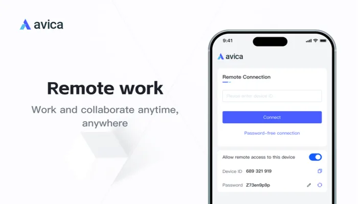
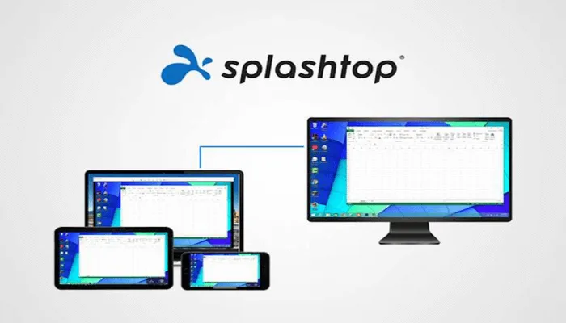
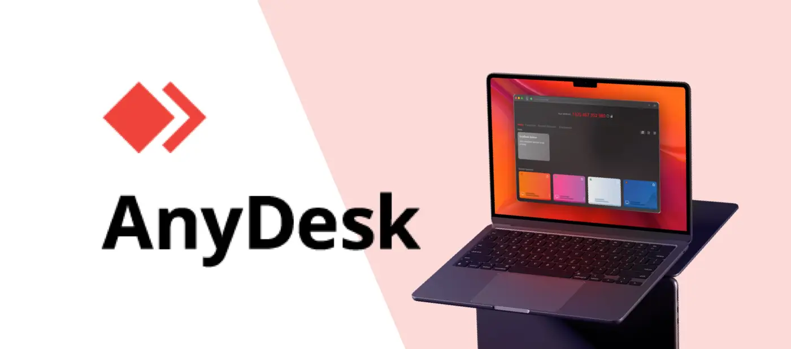
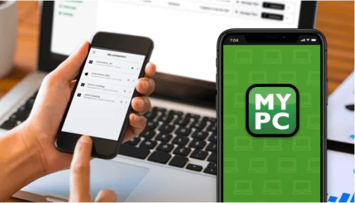
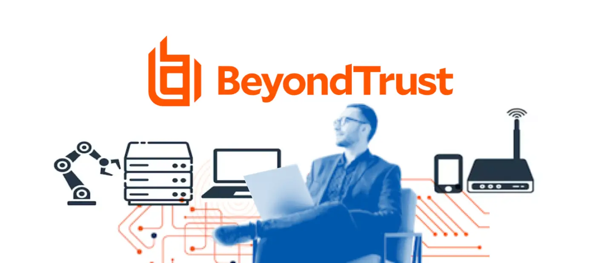
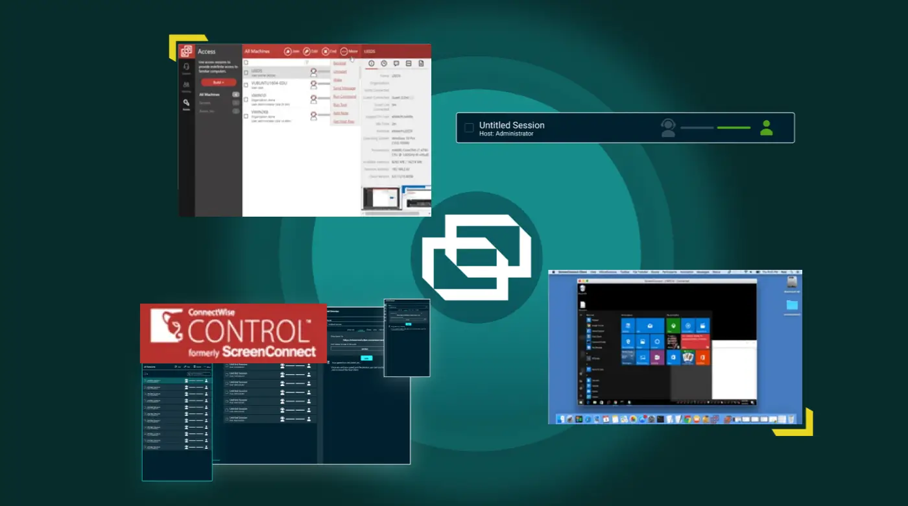
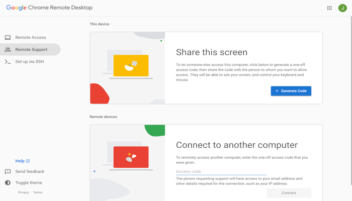
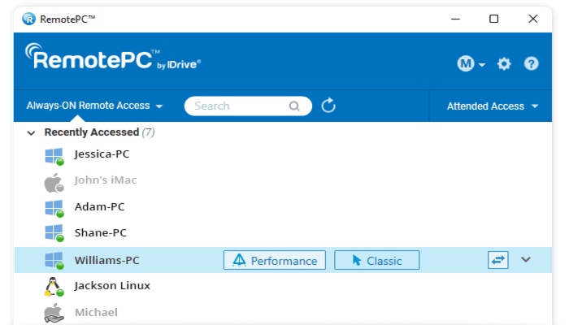
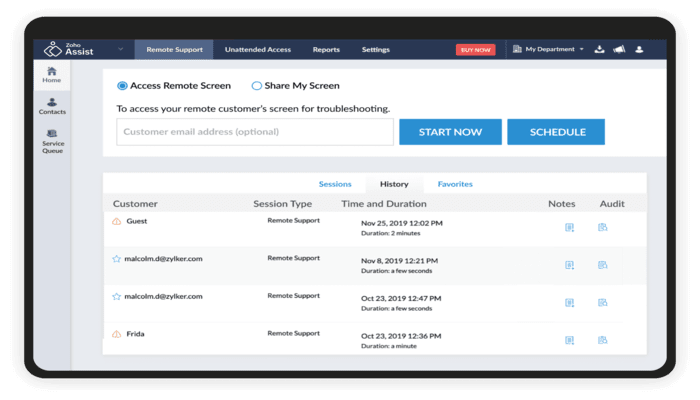
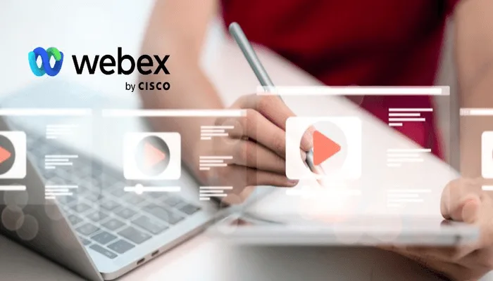

TeamViewer 替代品：哪种远程工具适合你？

你在使用 TeamViewer 时是否经常遇到断线、延迟或其他问题？你是否需要支付高昂的许可费用才能解锁更多高级功能？
TeamViewer 曾是远程访问的首选，但由于成本上涨、稳定性问题以及日益严重的安全隐患，如今正逐渐失去市场。越来越多的用户正在寻找性能更佳、性价比更高的替代方案。
我花了 15 天时间测试了一系列热门的远程桌面工具，并精心挑选了 10 款最佳替代方案，涵盖了从个人用途到企业级的各种需求。无论你的预算或使用场景如何，这里总有一款适合你。
如何选择 TeamViewer 替代品？
TeamViewer 确实提供了丰富的功能和跨平台支持，但对于许多用户来说，它已经超出了他们的需求，也超出了他们愿意支付的费用。
那么，什么才是 TeamViewer 的良好替代品呢？以下是需要考虑的四个关键因素：
合理的定价 ：TeamViewer 价格昂贵。更好的替代方案应该提供灵活的计费选项和涵盖基本功能的免费计划，这样用户只需支付他们需要的费用。功能重点 ：TeamViewer 功能丰富，但大多数用户并不需要那么复杂的功能。更好的替代方案应该专注于基本功能——流畅的控制、快速的文件传输和稳定的移动体验。可靠的性能 ：没有什么比延迟或断线更能影响工作效率了。无论你身处城市还是跨越大洲，可靠的远程工具都应该快速稳定。强大的安全性： 远程访问处理敏感数据。端到端加密和清晰的权限并非可有可无，而是至关重要的。
准备好升级你的远程体验了吗？现在，让我们看看哪些远程访问工具真正值得你信赖。
Avica
作为远程桌面工具的常客，我非常重视响应速度和安全性。过去使用 TeamViewer 时，经常会遇到操作不流畅、连接突然中断等问题，影响了工作效率。
在这篇评测中，我发现 Avica 表现出色，
在安全方面，Avica 使用
在定价方面，Avica 提供从免费到高级的各种订阅计划，付费版本起价为每年 79 美元，几乎是 TeamViewer 价格的三分之一，整体性价比非常出色。
此外，我还找到了一种更实惠的方式来访问 Avica 的高级版本——通过信誉良好的账户共享平台。这些服务可以让你以低于官方定价的价格享受完整功能版本，既省钱又不影响体验。
比如我用过的环球巴士平台，就提供了Avica的共享订阅选项，价格更实惠，使用也更稳定，功能上和官方版没有区别。
Splashtop
在实地工作期间，我经常需要随时随地调整设计文件。我尝试过的大多数远程桌面工具在移动设备上都表现不佳——控制滞后、响应速度慢，或者只是用户界面笨拙。但 Splashtop 确实给我留下了深刻的印象。
支持在平板或手机上进行拖动、缩放、标记等
Splashtop 在视觉和音频性能方面也胜过 TeamViewer。它支持清晰的
但是，我确实在使用 Splashtop 时遇到了一些问题，最明显的是其有限的协作功能。它缺少内置的远程会议、语音通话和多用户屏幕共享功能，因此不太适合依赖频繁远程演示或实时团队协作的用户。
话虽如此，对于专注于设计或编辑的个人用户（尤其是在移动设备上），Splashtop 能够满足他们的需求。尽管协作功能有限，但其速度、清晰度和触摸精度使其成为移动端视觉工作的首选。
- Splashtop 定价：提供免费版本；专业版每月 8.25 美元；性能版每月 13 美元。
AnyDesk
AnyDesk 是我测试过的最轻量级的远程访问工具之一。它只需几秒钟即可完成设置，很多情况下甚至无需安装。只需启动即可使用，非常适合快速、临时的远程会话。
真正让我印象深刻的是它的速度。得益于其专有的 DeskRT 技术，AnyDesk 的响应速度令人惊叹——在本地网络上的延迟低于 16 毫秒，几乎感觉不到延迟。我在从低端笔记本电脑到移动热点的各种设备上都进行了测试，体验始终非常流畅。
话虽如此，它确实有局限性。它缺乏集中管理和团队协作工具等高级功能，因此不太适合大型组织。
但对于需要快速、简单和可靠的自由职业者或小团队来说，AnyDesk 绝对值得一试。
- AnyDesk 定价：免费试用；标准计划每月 35.90 美元。
GoToMyPC
GoToMyPC 给我的印象是一款非常稳定且便捷的远程办公工具。如果你不追求
在我的测试中，它运行Word、Excel和ERP系统非常流畅，几乎没有任何延迟。远程打印功能也很方便，让我可以直接在本地打印机上打印文件，避免了额外的传输。
但是，它是按设备计费的，因此如果你需要远程访问多台计算机，则必须为每台计算机购买单独的许可证。
总体来说，我用它远程访问公司电脑处理文档、开会、回复邮件等，整体体验还是比较稳定流畅的，虽然功能不是很多，但是很实用。
- GoToMyPC 定价：专业版每月 29.05 美元；企业版每月 19.60 美元。
BeyondTrust
如果你的工作围绕 IT 支持或技术操作，BeyondTrust 是我为此目的测试过的最好的远程桌面工具之一。
我在使用过程中最直观的感受就是它的安全性高。BeyondTrust支持
此外，BeyondTrust 允许多名技术人员在同一个远程会话中协同工作，例如一个人进行远程控制，另一个人协助查看日志或执行脚本，这使其非常适合团队使用。
当然，由于功能强大，BeyondTrust 的界面略显复杂。首次使用 BeyondTrust 时，需要阅读文档、配置权限、绑定目录服务等，上手难度不如 TeamViewer 那么高。
但是，如果你的团队需要集中控制、强大的审计以及跨多个端点的实时协作，那么学习是值得的。
- BeyondTrust 远程支持定价：联系销售人员获取报价。
ConnectWise Control
ConnectWise Control 是 IT 支持团队和内部技术人员的另一个可靠选择。
我非常喜欢的一点是它支持
它还提供了强大的集成功能。它与我之前使用的工单系统和身份验证工具无缝协作，并且支持
话虽如此，界面功能丰富，但不够直观。刚开始使用时肯定需要一定的学习时间。
不过，如果你正在寻找安全、可定制且功能强大的远程支持工具，ConnectWise Control 非常值得考虑。
- ConnectWise Control 定价：标准计划每年 45 美元。
Chrome Remote Desktop
如果你只需要偶尔访问另一台计算机或远程帮助朋友和家人，Chrome 远程桌面是最简单、最省事的选择之一。
它最大的优势是什么？
更棒的是，它上手非常便捷。只要你有 Chrome 浏览器，只需点击几下即可连接，无需任何技术知识。
然而，它只涵盖了基本功能——没有文件传输、语音通话、打印或多用户支持。它适合快速远程访问，但不适合技术支持或团队协作。
总而言之，如果你正在寻找一款免费、易于使用的远程访问工具来执行偶尔的任务，那么 Chrome 远程桌面是一个不错的选择。
- Chrome 远程桌面定价：免费
RemotePC
当寻找一种支持多设备远程控制且无需高额订阅费用的工具时，RemotePC 为我提供了很棒的体验。
与 TeamViewer 不同，RemotePC 即使在基础套餐中也允许你
话虽如此，它确实存在局限性。它缺乏内置的协作工具，例如远程会议、语音通话或多用户控制。因此，它不太适合演示、培训或团队任务。
简而言之，对于想要以可承受的价格可靠地访问多台设备的个人或小团队来说，RemotePC 是一个明智而实用的选择。
- RemotePC 定价：专业版每月 15 美元。
Zoho 助手
如果你的团队已经使用 Zoho 工具，Zoho Assist 将使你的远程支持工作变得非常顺畅。
它与 Zoho 工单系统无缝集成。你只需在工单页面单击即可启动远程会话，客户信息和活动日志会自动同步，无需在系统之间切换，从而保持流程高效。
我非常喜欢的一点是，客户无需安装任何东西。他们只需
然而，与功能更丰富的 TeamViewer 相比，Zoho Assist 主要侧重于基本的远程支持和访问。在远程会议、集中设备管理和跨平台文件传输方面，其功能相对有限。
总的来说，如果你是技术支持专业人员（尤其是已经在使用其他 Zoho 系统的人），Zoho Assist 将非常直观并帮助你更高效地工作。
- Zoho Assist 定价：专业版每月 15 美元。
Webex Access
Webex Access 非常适合那些特别注重安全并且已经在使用
它最大的优势在于安全性。无论你是谁，从哪里登录，使用什么设备，都必须通过身份验证、设备检查和访问权限审批才能进入系统。这绝对让你安心无忧。
如果你的公司已经在使用 Webex Meetings 或 Cisco 网络设备，那么集成将是无缝的。一切都连接顺畅，无需额外的设置或手动配置。
然而，移动体验并不理想。与 TeamViewer 相比，Webex Access 主要面向桌面应用。移动端控制功能相当有限，如果你经常出差，这可能会让你感到沮丧。
总而言之，Webex Access 可能不是最适合移动设备的，但对于需要强大安全性和轻松集成的思科用户来说，它可以很好地完成工作。
- Webex Access 定价：联系销售人员了解价格
哪种 TeamViewer 替代方案是最佳选择？
在我测试的10款TeamViewer替代方案中，Avica脱颖而出，成为最佳选择。它性能强劲，用户体验流畅，安全性可靠，最重要的是价格实惠。
它支持 4K 分辨率和 60 FPS 帧率，延迟极低，非常适合设计、建模以及任何需要清晰视觉效果和实时响应的任务。它还高度重视安全性，提供端到端加密和多层保护。此外，它定价灵活，提供免费版本，无论你是出于工作还是个人需求，都物超所值。
如果你正在寻找一款安全、高效且价格实惠的远程访问工具，我强烈推荐你尝试一下
常见问题解答
有没有比 TeamViewer 更好的选择？
Avica 凭借其卓越的性能、超流畅的远程桌面体验以及即使在复杂网络条件下也能保持的优化稳定性，超越了 TeamViewer。此外，它还拥有强大的安全措施和现代化、用户友好的界面。
什么比 TeamViewer 更安全？
Avica 比 TeamViewer 更安全，这得益于其企业级加密、精细的访问控制和全面的会话审核功能。它还支持安全的远程工作流程，具有超低延迟和稳定的 4K 流媒体传输，非常适合注重安全性和性能的团队。
TeamViewer 免费使用有时间限制吗？
TeamViewer 免费版通常会对会话设置时间限制，从而影响较长的工作任务。相比之下，Avica 提供无限制的远程访问，不会中断会话，让用户可以根据需要长时间保持连接，从而不间断地提高工作效率。